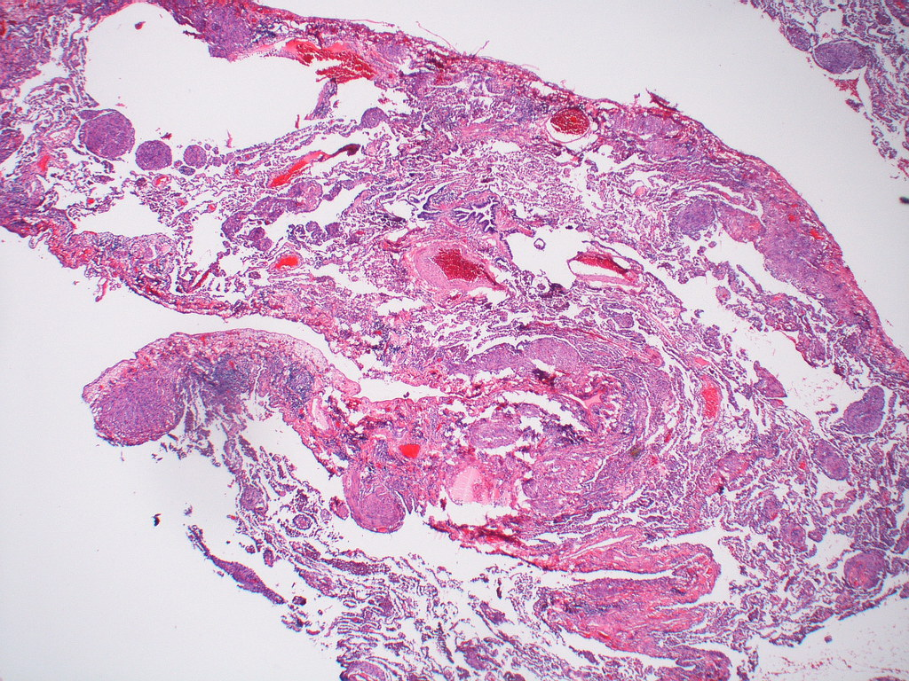

Elaborate Works
Open to any communication and sharing of ideas!

Lymphangioleiomyomatosis Study
ProjectsLymphangioleiomyomatosis (LAM) is a rare progressive disease characterized by mutations in the TSC1/TSC2 genes and hyperactivation of the mTORC1 pathway.
Details